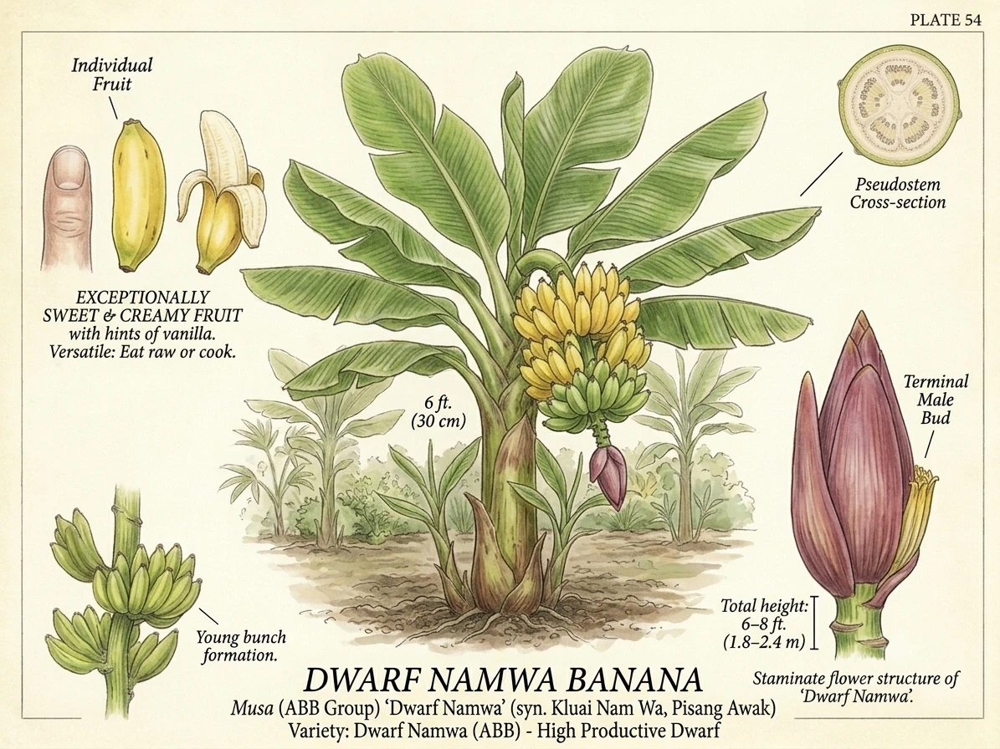
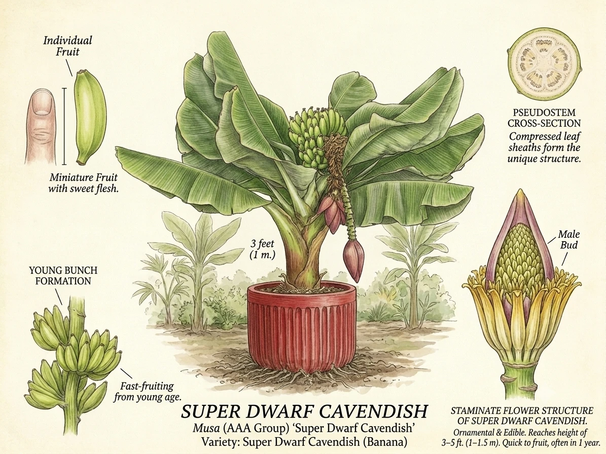
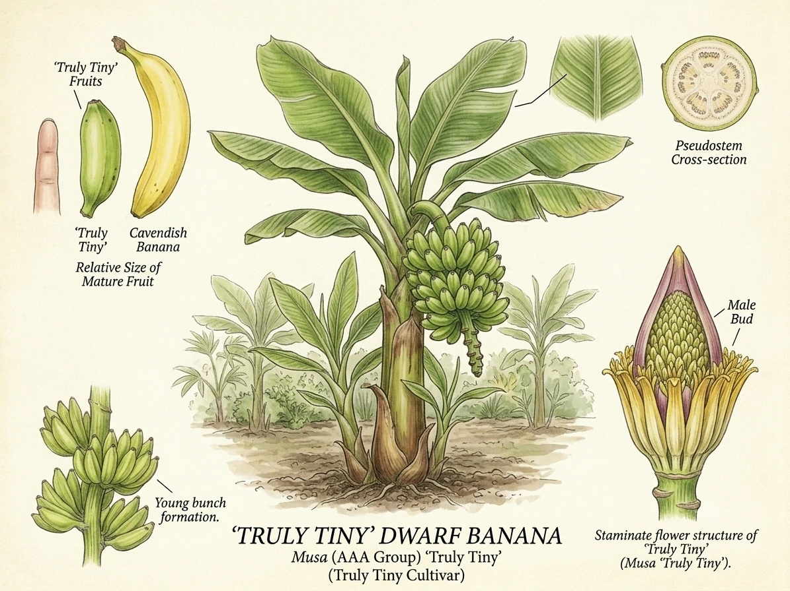
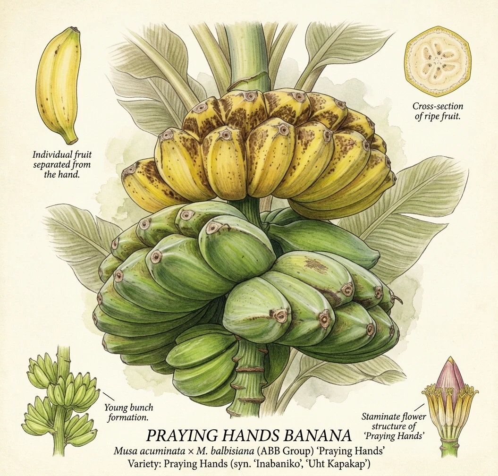
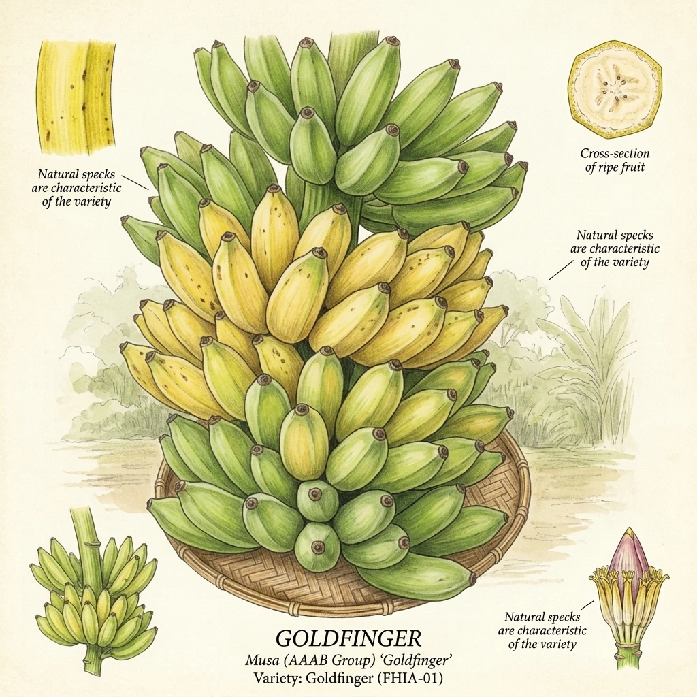
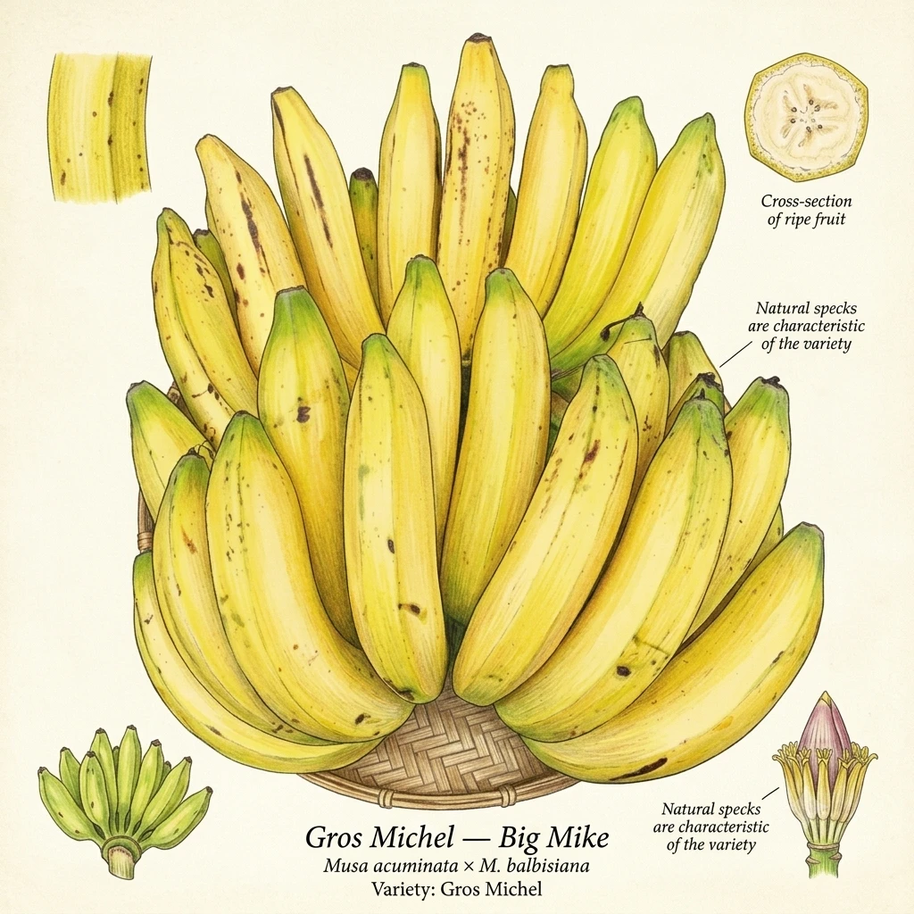
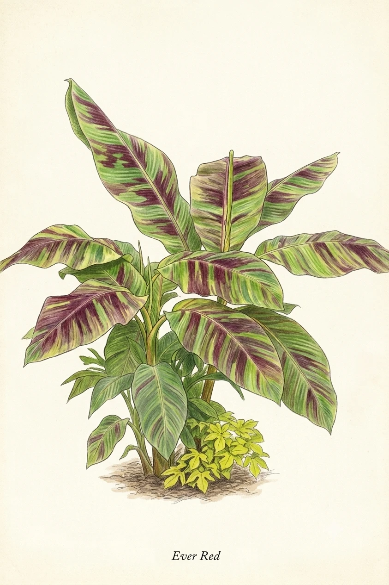

15 Recommended Varieties for the DMV
These varieties are ranked roughly from most cold-hardy / easiest for beginners to more tropical / requiring more management. Each profile covers origin, flavor, growing specs, DMV suitability, and what makes it special.

The undisputed champion of cold-hardy bananas and the first plant most DMV gardeners should consider. Musa basjoo is not grown for its fruit (which is seedy and inedible) but for its extraordinary resilience and explosive ornamental presence. Originally from the Ryukyu Islands of southern Japan, it was used historically for its strong leaf fibers in textile production — hence the "fiber" name. It was introduced to Western horticulture through Kew Gardens in the 19th century.
Interesting fact: Musa basjoo's fiber has been woven into fabric called "bashōfu" in Okinawa for over 500 years — it was used for royal garments. The plant is considered a designated traditional craft of Japan.

A compact, flamboyant ornamental banana native to Assam and the eastern Himalayas. The star of this plant is its unique fruit: small, fuzzy, vivid pink bananas that split open on their own when ripe, like tiny party favors, revealing dark seeds. The fruit is technically edible but so full of hard black seeds as to be impractical. Grown for the tropical spectacle it creates in a garden — unusual enough that guests always stop and ask about it.
Interesting fact: The self-peeling fruit is an evolutionary adaptation — in the wild, the fruit splits to expose seeds for bird dispersal. This is unusual among bananas, where fruit typically must be peeled by mammals.

Not a true banana (a distinct but related genus), the Golden Lotus Banana is from the high mountain forests of Yunnan, China — growing at elevations up to 8,000 feet. This gives it extraordinary cold tolerance for a banana relative. It's grown almost entirely for its spectacular bloom: a massive, golden-yellow artichoke-shaped flower that persists on the plant for up to eight months. This is one of the most unusual and conversation-worthy plants you can grow in a DMV garden.
Interesting fact: Musella lasiocarpa is the only species in its genus — it has no close relatives and represents an ancient evolutionary branch of the banana family. In Chinese traditional medicine, the flower was used to treat stomach disorders.

If you want a realistic shot at eating bananas you grew yourself in the DMV, Dwarf Orinoco is your primary candidate. Originating from the Orinoco River Valley of Venezuela, this cultivar has been selected for exceptional cold and wind tolerance. The Philadelphia Orchard Project is actively trialing it in a high tunnel as one of their two primary cold-hardy banana experiments. The fruit is thick-skinned with a mild, starchy-sweet flavor — excellent for cooking green, and fully sweet when ripened yellow. It bounces back from frost damage faster than almost any other variety.
Interesting fact: The Orinoco is one of the oldest banana cultivars in continuous cultivation in the Americas. Spanish missionaries brought it to the Caribbean in the early 1500s, where it became a food staple long before Cavendish arrived. It also goes by the names "Horse Banana" and "Burro Banana" in different regions.

A beloved dwarf Indian cultivar that has become one of the most recommended edible bananas for zone 7 growing. Originally from Gujarat, India, Raja Puri is prized by home growers worldwide for its combination of compact size (8–10 ft), genuine cold and wind resistance, and outstanding fruit flavor — described as sweet, creamy, and subtly tart. It is also one of the faster-fruiting varieties, potentially flowering in as little as 9 months and producing a harvestable bunch within 18 months of planting under good conditions.
Interesting fact: Raja Puri translates roughly to "king's town" in Sanskrit — it was historically considered a premium cultivar reserved for markets in major Indian cities. It remains one of India's most commercially important banana varieties today, largely unknown to Western consumers.

This is the variety you've heard about — the "blue banana that tastes like vanilla." The Blue Java is a Southeast Asian hybrid (ABB genome group) that earned its nickname from the distinctly silver-blue skin of unripe fruits, which ripens to a pale, matte yellow. The flavor truly is different: custardy, mellow-sweet, and unmistakably vanilla-adjacent. Freeze ripe slices and blend them and you'll understand why it's branded the "Ice Cream Banana." It's also one of the most wind-resistant bananas, historically planted in windbreaks across Hawaii and the Pacific.
Interesting fact: The "blue" color is not pigment in the traditional sense — it comes from a natural wax bloom on the fruit's surface that scatters blue light, similar to the phenomenon that makes blueberries blue and some butterfly wings iridescent. As the fruit ripens and the wax breaks down, the blue disappears. Also note: some nurseries mislabel Namwa as Blue Java — if your "Blue Java" fruit is smaller and more numerous, you likely have Namwa (which is also delicious, but different).

The banana you already know — this is the fruit sold in virtually every American grocery store. The "Dwarf" in the name refers to the pseudostem height (6–9 ft), not the fruit, which is full-sized. Its origin story involves the Duke of Devonshire's gardener Sir Joseph Paxton, who cultivated specimens sent from China at Chatsworth House in the 1830s. It replaced the Gros Michel after Panama Disease (Race 1) devastated commercial crops in the 1950s–60s. Young plants have distinctive maroon-purple blotches on their leaves.
Interesting fact: Dwarf Cavendish was originally considered inferior to the Gros Michel and was grown mainly in botanical gardens and private estates. The banana industry adopted it out of necessity, not preference. Most banana connoisseurs agree the Gros Michel was genuinely better-tasting.

An underrated gem. Dwarf Namwa (also called Pisang Awak, Thai Banana, or Dwarf Namwah) is a Southeast Asian cultivar beloved across Thailand, Indonesia, and Malaysia. It produces enormous clusters of Lady Finger-style bananas with a sweet, creamy flavor with hints of vanilla and a slight tang — noticeably different from Cavendish. The robust pseudostem and excellent wind resistance make it suited to DMV conditions. Wellspring Gardens rates it at zone 7b, making it one of the more cold-tolerant edible options available.
Interesting fact: Pisang Awak is one of the most widely grown backyard bananas in the world — just not in North America, where it's virtually unknown in supermarkets. In Thailand, it is traditionally fermented and dried into banana chips that are a national snack staple. "Pisang" is the Malay word for banana.

The best option for true year-round indoor cultivation. At a maximum height of 3–5 feet, Super Dwarf Cavendish is compact enough for a bright living room, sunroom, or south-facing window bay. It produces genuine, full-flavored Cavendish bananas on a plant that can live its entire life in an 18–25 gallon container. This is the variety Fafard and other horticultural authorities recommend as the top edible banana for indoor growing. It can fruit within a year of planting under good conditions.
Interesting fact: NASA's Clean Air Study found banana plants are among the most effective houseplants for removing formaldehyde and other VOCs from indoor air — a pleasant side benefit for the indoor grower. The large leaf surface area is key to this air-filtering effect.

The world's smallest edible banana variety, reaching a maximum of 2–3 feet tall. This is a novelty in the best sense — a fully functional, fruit-producing banana plant you can keep on a countertop or bright windowsill. The fruit is small but genuinely edible with a sweet Cavendish-like flavor. It won't produce large grocery-store bunches, but as a conversation piece and a proof of concept ("I grew that"), it is unbeatable. Marketed under the trade name "Truly Tiny Musa" by several specialty nurseries.
Interesting fact: Despite being 2 feet tall, a Truly Tiny plant produces proportionally full-sized bananas — the fruit-to-plant ratio is absurdly high. This is possible because banana size is determined by genetics and fruit development time, not plant height.

One of the most visually distinctive banana varieties in existence. Praying Hands gets its name from a unique genetic trait where two adjacent "hands" of bananas grow fused together, with individual fingers pressed flat against each other — resembling hands clasped in prayer. Native to Southeast Asia, the flavor is mild, slightly less sweet than Cavendish, with a distinct vanilla and honey note. The unusual appearance makes it a collector's variety and a guaranteed conversation piece at any farmers market or garden party.
Interesting fact: No other edible banana in commercial or home cultivation produces fused hands consistently as a variety trait. The fusing is genetic, not a mutation or disease. Each individual finger within the fused hand is still a normal banana with its own peel — they're attached along the sides but fully separable.

Visually the most dramatic fruiting banana — the pseudostem, leaf undersides, and fruit are all a deep burgundy-maroon red. Widely grown across South Asia, East Africa, and the Caribbean, Red Dacca produces plump, sweet bananas with a flavor richer than Cavendish and a distinct hint of raspberry and strawberry in the flesh. The fruit ripens to a reddish-orange (not yellow), and the soft, creamy texture makes it prized for fresh eating and smoothies. In late summer when fully colored up, the pseudostem reads almost burgundy from a distance — nothing else in a garden looks like it.
Interesting fact: Red bananas contain significantly more beta-carotene (Vitamin A precursor) than yellow Cavendish bananas, which contributes to their reddish flesh. They also have higher Vitamin C content. In India, red bananas are considered auspicious and are used in religious ceremonies.

A remarkable modern hybrid developed by the Honduran Foundation for Agricultural Investigation (FHIA) in the 1980s, specifically bred to resist Panama Disease (both Race 1 and TR4), Black Sigatoka, and other major banana diseases. Goldfinger is a cross between Cavendish and Lady Finger types with an AAAB genome, making it a genuine tetraploid. The flavor is genuinely distinctive: apple-like with a slight tang when underripe, becoming richer and sweeter at full ripeness. It has gained commercial traction in Australia. It does not brown when cut — a notable practical advantage.
Interesting fact: Goldfinger was the result of a 10-year breeding program involving over 4,000 individual plant crosses. It is considered by plant scientists as one of the most promising candidates to eventually supplement the Cavendish in commercial production if TR4 continues spreading. Home growers growing Goldfinger today are participating in a kind of living genetic preservation program.

The legendary banana. Before the 1960s, this was the only banana most Westerners ever ate — and many food historians argue it was simply better than the Cavendish that replaced it. Gros Michel has a richer flavor, creamier texture, thicker skin (better for shipping), and a stronger, more complex aroma. It's the banana that banana candy, banana Runts, banana Laffy Taffy, and banana ice cream flavors were all modeled on — which is why they taste nothing like modern grocery bananas. Gros Michel is still grown in small quantities in Asia, Africa, and the Caribbean and is increasingly available from specialty nurseries.
Interesting fact: The Gros Michel's collapse is one of the defining agricultural catastrophes of the 20th century. Within a decade, an estimated 40,000 acres of Gros Michel plantations in Central America were abandoned as the fungus spread through the soil. The land could not be replanted with Gros Michel for decades because the fungus persists in soil indefinitely. This history is the reason biosecurity around TR4 today is so urgently managed internationally.

A 2025 introduction that's generating significant excitement among cold-climate banana enthusiasts. Musa sikkimensis 'Ever Red' is a cold-hardy banana from the Sikkim region of the eastern Himalayas, with remarkable hardiness reportedly to zone 5. Its distinguishing feature is a spectacular foliage display: striking striped green leaves with deep maroon-red markings that intensify in strong light. Like Musa basjoo, it's primarily ornamental in the DMV — the fruit is not suitable for eating — but the foliage display is arguably even more dramatic. Noted by the National Garden Bureau as a "New in 2025" plant.
Interesting fact: Musa sikkimensis grows wild in mountain forests at elevations up to 6,500 feet in the Sikkim and Darjeeling regions, where winter temperatures regularly drop well below freezing. This evolutionary adaptation to genuine mountain winters is what gives it cold tolerance that shames most other Musa species.